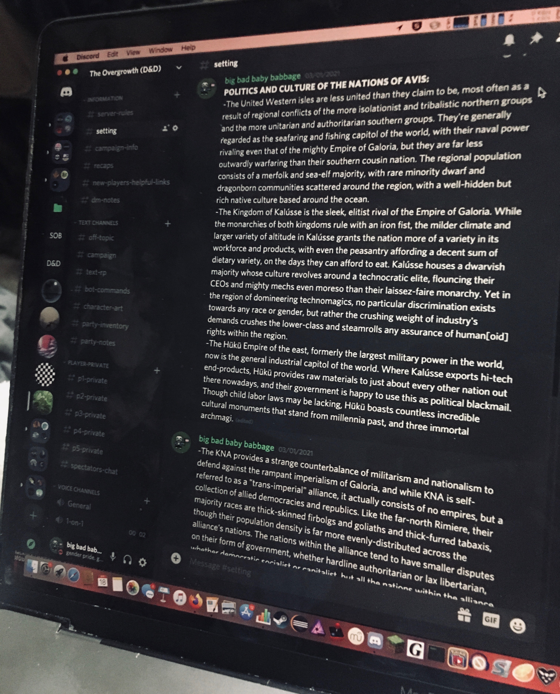
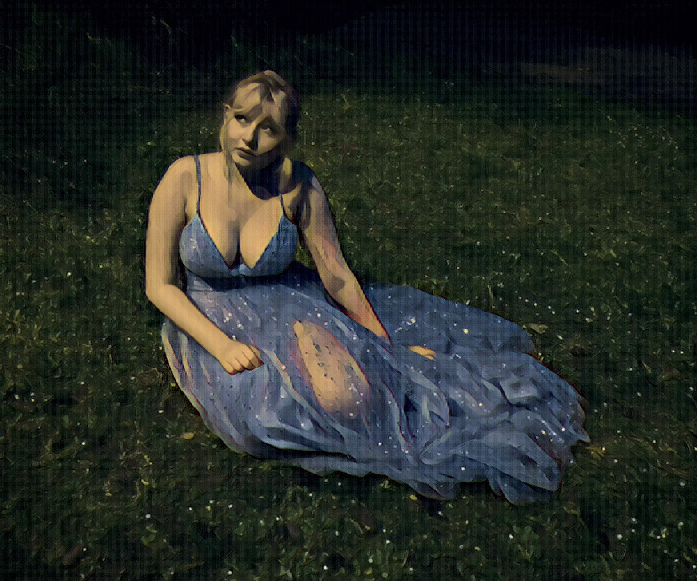

Somewhere, in another age...
Posts and other material for BCORE 120 C (Art of Myth)
…There be Dragons.
Welcome to my academic blog for BCORE 120 C. Here, you’ll find weekly(?) posts discussing various myths and legends, and their relation to a modern context.
I play a whole lot of D&D, so expect a lot of references thereto as well, as Dungeons & Dragons was a revolutionary franchise for a lot of modern interpretations of mythos, normalizing the stories of polytheistic cultures in monotheistic cultural settings that would otherwise consider such material taboo.
Other Worlds
4/17/21 - The art of being a homebrew author, and the necessary resulting god complex.
Magic and Monsters
5/1/21 - Safira, the Ascendant Fae Queen.

Project maintained by lucinder
Hosted on GitHub Pages — Theme by mattgraham